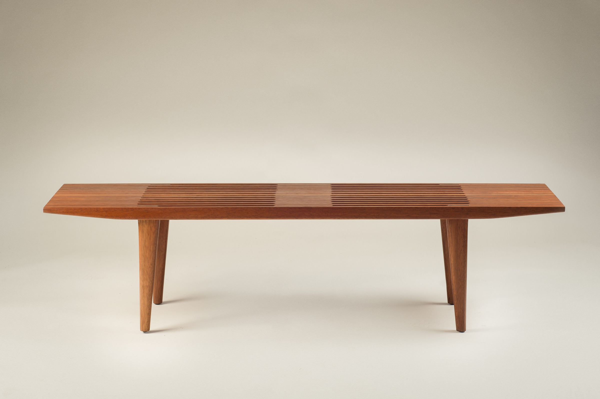
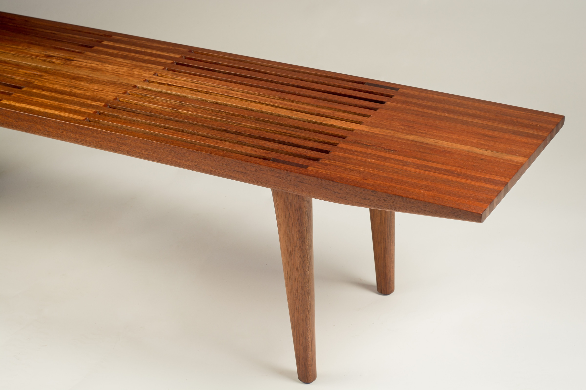
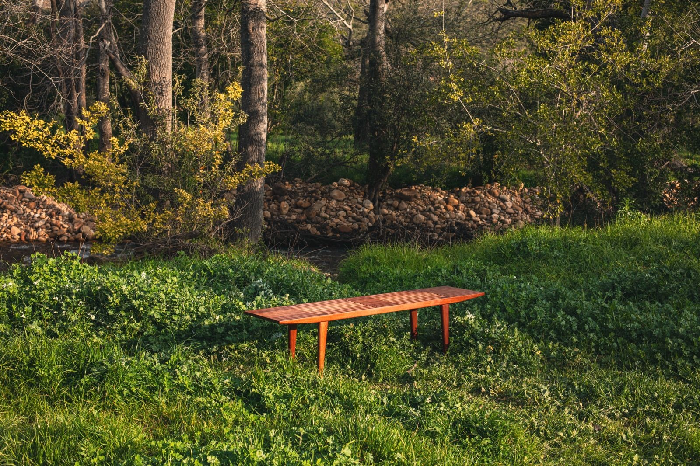

FECIT
Platform
A grounded platform with a sculptural silhouette and an emphasis on honest construction.



Interested in this piece or a related commission?
Enquire about the Platform


Interested in this piece or a related commission?
Enquire about the Platform